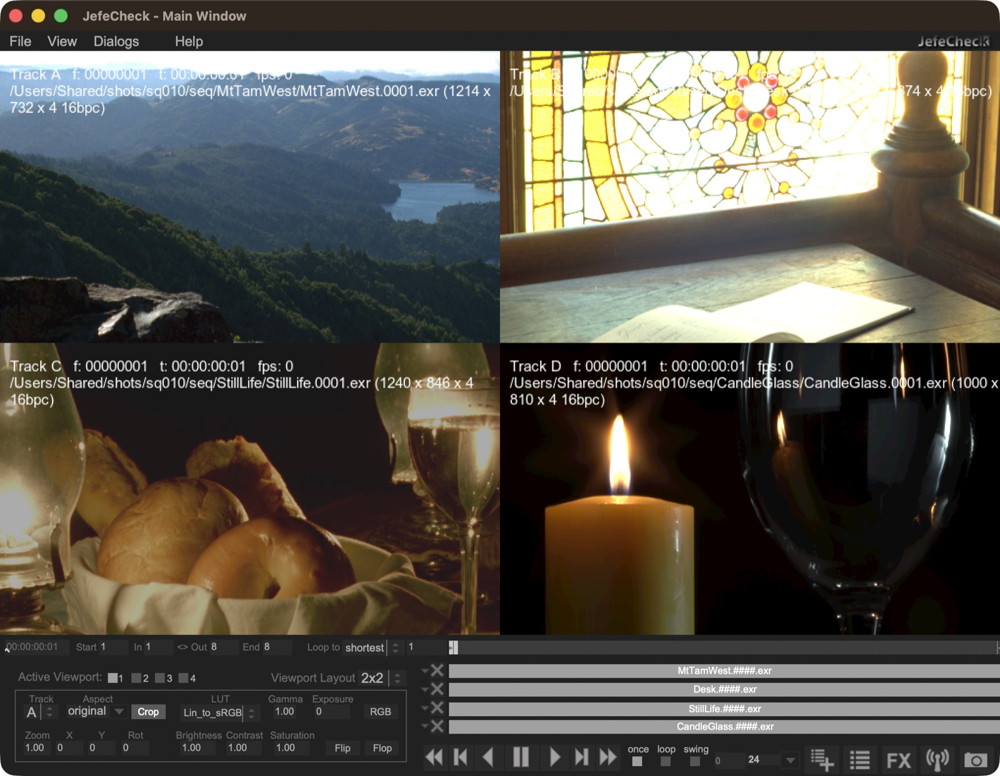
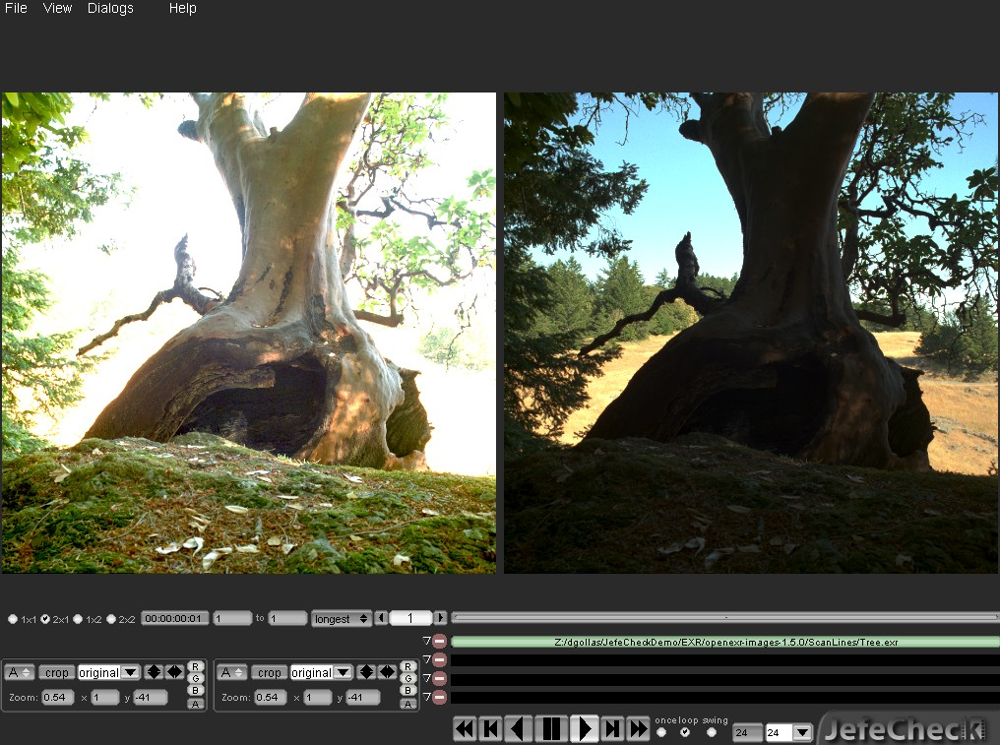
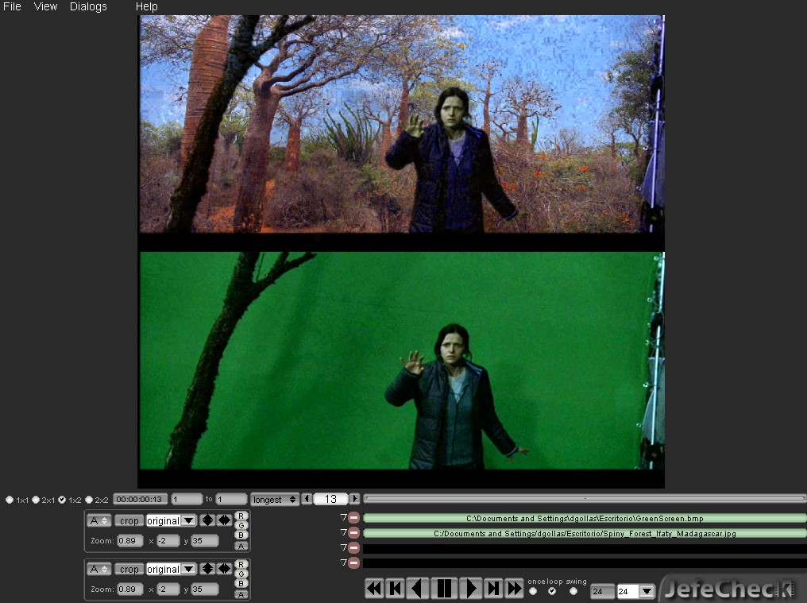
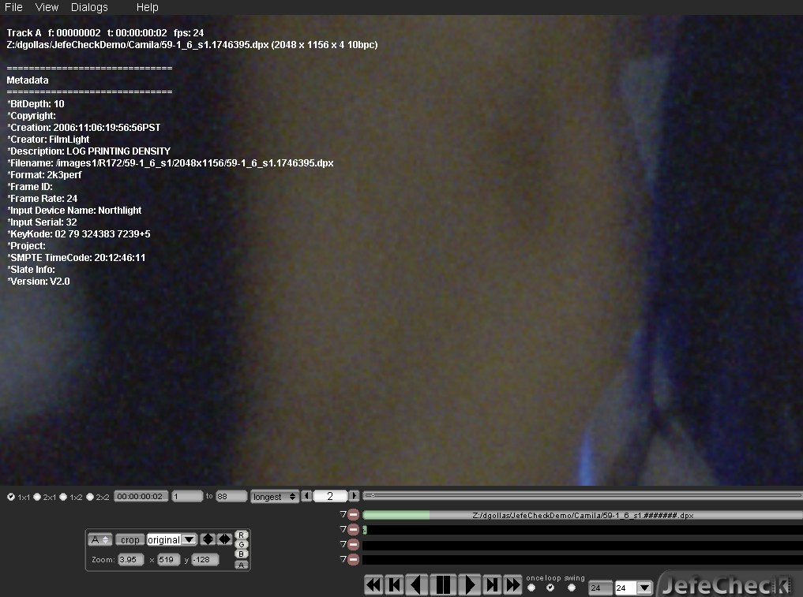

Loads 16-bit OpenEXR sequences
Reads EXR, DPX, TIFF and JPEG through OpenImageIO, up to 5K frames.
JefeCheck plays EXR, DPX and JPEG sequences at up to 4K and 24 fps on everyday hardware, with LUTs and four tracks on screen.

Reads EXR, DPX, TIFF and JPEG through OpenImageIO, up to 5K frames.
Set gamma and exposure per plate to check the highlights a float EXR holds.

A green-screen key runs in real time, so a rough comp is ready for dailies.

DPX, EXIF and OpenEXR headers sit beside the picture while it plays.

Load up to four tracks and lay them out 1x1, 2x1, 1x2 or 2x2. Each plate keeps its own LUT, gamma and exposure.
One JefeCheck drives the session. Every other copy follows its frame and shows the same pointer and text chat.
brew install --cask danielgollas/jefecheck/jefecheckwinget install danielgollas.JefeCheckcurl -L https://github.com/danielgollas/jefecheck/releases/latest/download/jefecheck-linux-x64.tar.gz | tar xzNothing. It is open source under the GNU GPL v2, and the code is on GitHub.
Right-click the app and choose Open, or run xattr -dr com.apple.quarantine /Applications/JefeCheck.app.
Update App Installer from the Microsoft Store and run the command again in a new terminal. Portable zip builds are on the releases page.
Install libgl1 and libxcb-cursor0 from your package manager.
Yes. The build guide covers macOS, Windows and Linux with CMake. Read the build guide